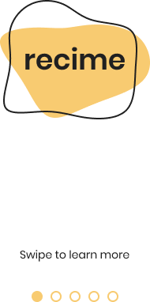
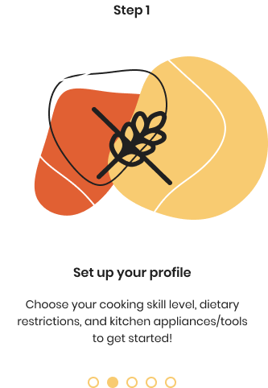
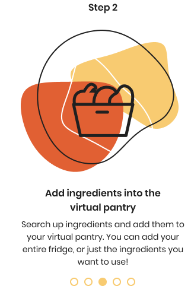
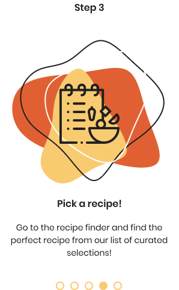
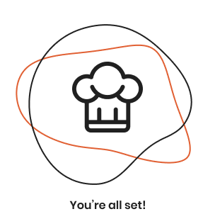

<!-- <ion-header>
  <ion-toolbar>
    <ion-title>onboard</ion-title>
  </ion-toolbar>
</ion-header> -->

<ion-content>

  <ion-slides>

    <ion-slide>
      <div class="recime-blob">
        
      </div>
      
      <a routerLink="/tabs/profile"><button class = "skip"></button></a>
    </ion-slide>

    <ion-slide>
      
     
    </ion-slide>

    <ion-slide>
      
      
    </ion-slide>

    <ion-slide>
      
     
    </ion-slide>

    <ion-slide>
      
      <a routerLink="/tabs/profile"><button class = "get-started"></button></a>
    </ion-slide>

  </ion-slides>

</ion-content>

<style>
  ion-slides {
    height: 100%;
  }

  .swiper-slide {
    display: block;
  }

  .recime-blob {
    position: relative;
    top: 95px;
  }

  .skip {
    position: absolute;

    top: 500px;
    left: 165px;
    background: none;
  }

  .get-started {
    position: relative;
    top: 100px;
    background: none;
  }

</style>
